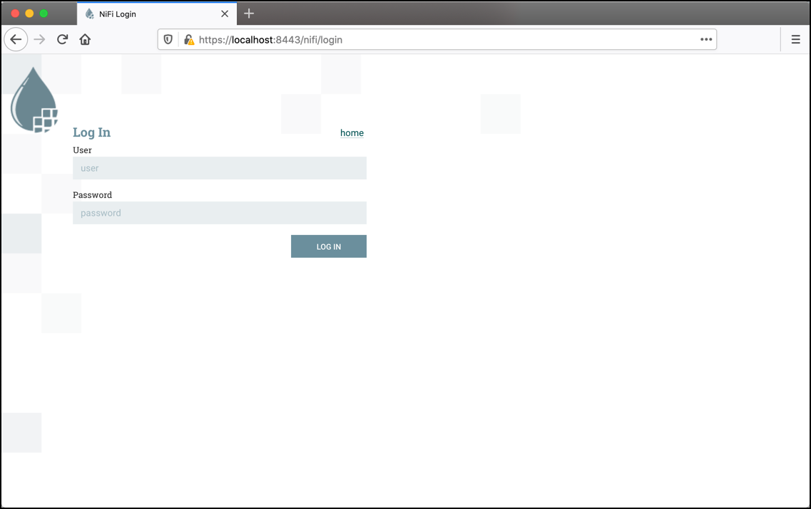
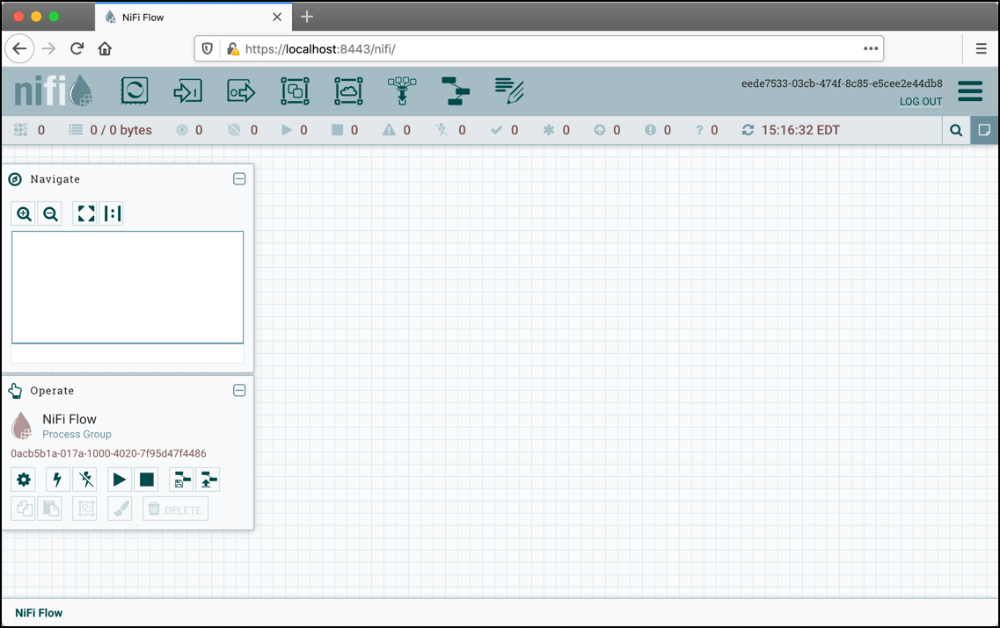
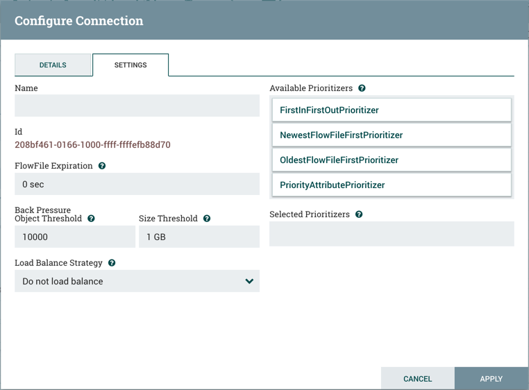
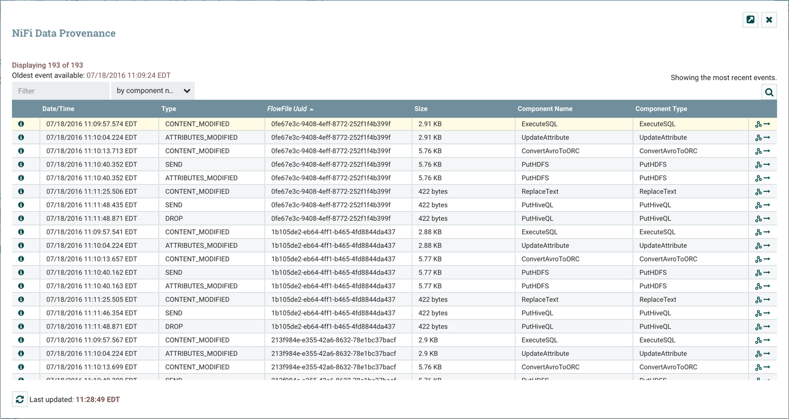
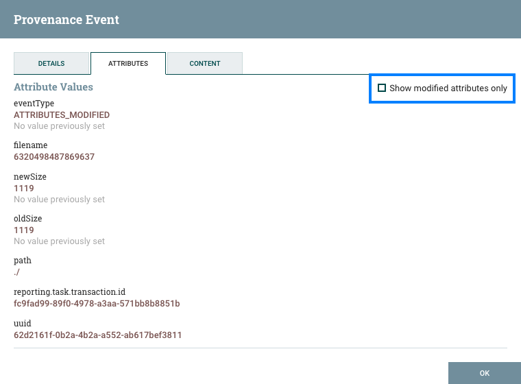
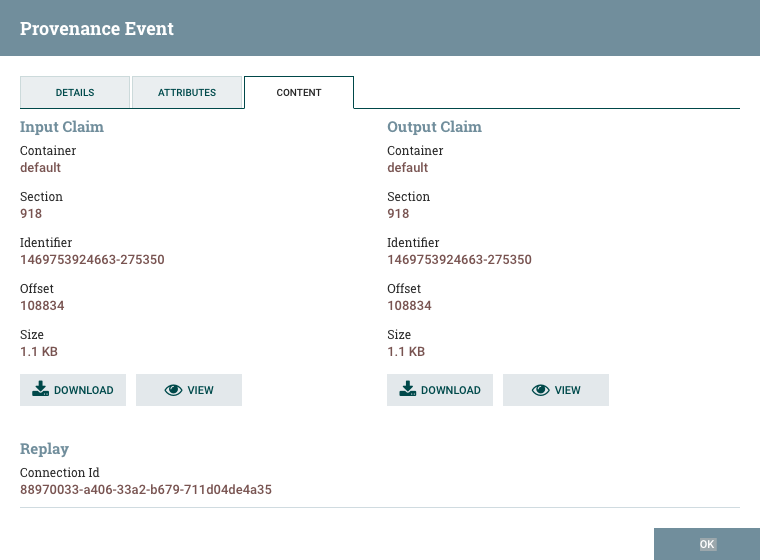
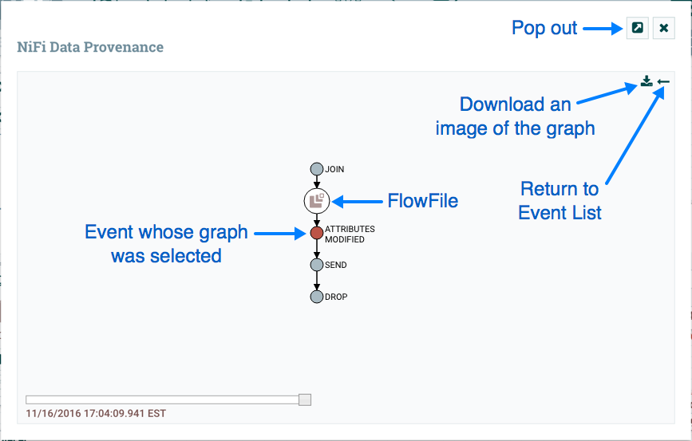

이 가이드는 누구입니까?
이 가이드는 결코 사용되지 않은 사용자를 위해 작성되며, NiFi 내에서만 특정 작업을 수행했습니다. 이 가이드는 배설 설명서 또는 참고 가이드가 될 예정이 아닙니다. 더 보기 사용자 가이드 훌륭한 정보 제공 그리고 훨씬 더 배기 자원이 될 예정이며 참조 가이드와 매우 유용합니다. 이 가이드는, 비교에서, 주문에 필요한 다만 정보로 사용자에게 제공하기 위하여 예정됩니다 NiFi와 함께 일하는 방법을 이해하기 위해 빠르고 쉽게 강력한 데이터 흐름을 구축 할 수 있습니다.
이 가이드에 대한 정보의 일부가 다른 동안 첫 번째 사용자에만 적용됩니다. 이 가이드는 NiFi를 사용한 사람들을 위해 적용 될 수 있습니다. 몇몇 다른 단면도, 몇몇의 어떤 독자를 위해 유용할지도 모릅니다. 무료 체험 가장 적합한 섹션입니다.
이 가이드는 사용자가 NiFi가 무엇인지에 대한 기본적인 이해를 가지고 있지 않으며하지 않습니다. 이 수준에 delve. 이 수준의 정보는 찾을 수 있습니다. 제품정보 문서.
이 가이드에 사용되는 용어
NiFi에 대해 이야기하려면 독자가 익숙해야 할 몇 가지 핵심 용어가 있습니다. 우리는 여기에 NiFi-specific 용어를 설명합니다.
관련 링크: "User Data"의 각 조각 (즉, 사용자가 처리 및 배포를 위해 NiFi로 가져온 데이터) FlowFile으로 불립니다. FlowFile은 두 부분으로 구성됩니다: 속성 및 콘텐츠. 콘텐츠는 사용자 데이터입니다. 기타. Attributes는 사용자 데이터와 관련된 키 값 쌍입니다.
관련 기사: 프로세서는 생성, 전송, 수신, 변환, 라우팅, Scalting, merging 및 처리 FlowFiles. NiFi 사용자에게 가장 중요한 빌딩 블록입니다. 데이터 흐름.
NiFi 다운로드 및 설치
| 진행하기 전에, Admin Guide를 확인하십시오. 최소 시스템 요구 사항 NiFi 설치 및 실행. |
NiFi를 다운로드 할 수 있습니다. NiFi 다운로드 페이지. NiFi 버전 다운로드 후 당신이 사용 하 고 싶은 위치에 zip 아카이브를 추출 하 고 싶습니다.
NiFi의 인스턴스를 구성하는 방법에 대한 정보 (예를 들어 보안, 데이터 저장을 구성하려면 구성, 또는 NiFi가 실행되는 포트), 참조 관리자 가이드.
NiFi 시작
위에 설명 된대로 NiFi를 다운로드하고 설치 한 후에는 메커니즘을 사용하여 시작할 수 있습니다. 당신의 운영 체계를 위해 적당한.
Windows 사용자
Windows 사용자의 경우 NiFi가 설치된 폴더로 이동하십시오. 이 폴더 안에 하위 폴더가 있습니다.
이름 * bin. 이 폴더에 Navigate 및 실행 nifi.cmd start.
이것은 NiFi를 시작하고 전경에서 실행하십시오. NiFi를 종료하려면 창을 선택하십시오. C를 누르는 동안 Ctrl 키가 시작되었습니다.
Linux/macOS 사용자
Linux 및 macOS 사용자의 경우 터미널 창을 사용하여 NiFi가 설치된 디렉토리로 이동하십시오.
전경 NiFi를 실행하려면 실행 bin/nifi.sh run. 이 응용 프로그램을 떠날 때까지
사용자가 Ctrl-C를 누릅니다. 그 시간에, 그것은 응용 프로그램의 폐쇄를 시작합니다.
배경에서 NiFi를 실행하려면, 대신 실행 bin/nifi.sh start. 이 응용 프로그램을 시작한다
시작하기 상태를 확인하고 NiFi가 현재 실행중인 경우 명령을 실행하십시오. bin/nifi.sh status. NiFi는 명령을 실행하여 종료 할 수 있습니다. bin/nifi.sh stop.
이름 * bin/nifi.sh start 실행하기 nifi.sh 배경에서 NiFi를 시작하고 나서 종료합니다. 당신이 원하는 경우 nifi.sh NiFi를 기다리기 전에 모든 구성 요소를 스케줄
종료, 사용 --wait-for-init 초에 지정된 옵션 타임 아웃 플래그 : bin/nifi.sh start --wait-for-init 120. 타이머가 제공되지 않는 경우, 15 분의 기본 타임아웃은
사용 가능
NiFi가 Homebrew에 설치되면 명령을 실행합니다. nifi start or nifi stop 파일 시스템에서 어디에서나 NiFi를 시작하거나 중지합니다.
나는 NiFi를 시작했습니다. 지금 무엇을?
기본 설치는 임의의 사용자 이름과 암호를 생성하고, 생성된 값을 애플리케이션 로그에 기록합니다.
신청 로그는 logs/nifi-app.log 설치 디렉토리에서. 로그 파일에는 라인이 포함되어 있습니다.
이름 * Generated Username [USERNAME] 그리고 Generated Password [PASSWORD] 액세스에 필요한 자격 증명을 나타냅니다.
해당 라인의 애플리케이션 로그를 검색하고 안전한 위치에 생성 된 값을 기록합니다.
다음 명령은 사용자 이름과 암호를 변경하는 데 사용될 수 있습니다.
$ ./bin/nifi.sh set-single-user-credentials <username> <password>이제 NiFi가 시작되었습니다. 데이터 흐름을 만들고 모니터링하기 위해 사용자 인터페이스 (UI)를 가져올 수 있습니다.
웹 브라우저를 열고 탐색 https://localhost:8443/nifi. 항구는 곁에 바뀔 수 있습니다
편집하기 nifi.properties NiFi 파일 conf 디렉토리이지만 기본 포트는 8443입니다.
웹 브라우저는 자기 서명 때문에 잠재적 인 보안 위험을 나타내는 경고 메시지를 표시합니다. 인증 NiFi 초기화 중 생성. 잠재적인 보안 위험을 받아들이고 로드를 계속 인터페이스는 개발 설치를위한 옵션입니다. 자체 서명 된 인증서는 60 일 후에 만료됩니다. 생산 배치는 신뢰할 수있는 권위에서 인증서를 제공해야하며 NiFi Keystore 및 truststore 구성을 업데이트해야합니다.
자체 서명된 인증서를 받아 들여지는 후 NiFi 액세스는 로그인 화면을 표시합니다.

생성 된 자격 증명을 사용하여 생성 된 사용자 이름을 입력합니다. User 주요연혁
비밀번호 Password 필드, 다음 선택 LOG IN 시스템에 접근.
이 시점에서 User Interface를 가져오는 것은 dataflow를 관현하는 공백 캔버스입니다.

UI는 여러 도구를 사용하여 첫 번째 데이터 흐름을 만들고 관리합니다.

Global Menu는 다음과 같은 옵션을 포함합니다:

프로세서 추가
우리는 지금 우리의 화포에 가공업자를 추가해서 우리의 dataflow를 창조하기 시작합니다. 이렇게하려면 프로세서 아이콘을 드래그하십시오.
(주) ) 화면의 왼쪽에서 캔버스의 중간에 (그래프 종이 같은
배경) 거기에 드롭. 이것은 우리가 추가하고 싶은 어떤 가공업자를 선택할 수 있는 저희를 허용하는 대화 상자를 줄 것입니다:
) 화면의 왼쪽에서 캔버스의 중간에 (그래프 종이 같은
배경) 거기에 드롭. 이것은 우리가 추가하고 싶은 어떤 가공업자를 선택할 수 있는 저희를 허용하는 대화 상자를 줄 것입니다:

우리는 선택할 수있는 몇 가지 옵션이 있습니다. 체계로 지향되는 술을 들어, 우리가 말하는 것
로컬 디스크에서 NiFi로 파일을 가져와야 합니다. 개발자가 가공업자를 만들 때, 개발자는 할 수 있습니다
그 프로세서에 "tags"를 할당합니다. 키워드로 생각할 수 있습니다. 우리는 이러한 태그 또는 프로세서에 의해 필터 할 수 있습니다
대화 상자의 오른쪽 상단 모서리에 필터 박스로 입력하여 이름. 당신이 생각하는 키워드에 유형
로컬 디스크에서 파일을 ingest 할 때. 키워드 "파일", 예를 들어, 우리에게 몇 가지를 제공
파일과 관련된 다른 프로세서. 용어에 의해 필터링 "현지"는 목록이 매우 빠르게 축소됩니다,
또한. 우리가 목록에서 프로세서를 선택하면,
우리는 대화 상자의 하단 근처에 프로세서의 간단한 설명을 볼 수 있습니다. 견적 요청
가공업자는. 설명의 다운로드 프로세서는 로컬 디스크에서 데이터를 끌어내는 것을 알려줍니다.
NiFi로 로컬 파일을 제거합니다. 우리는 그 후에 가공업자 유형을 두배로 하고 그것을 선택하고 선택합니다
Add 버튼. 프로세서가 삭제 된 위치에 캔버스에 추가됩니다.
프로세서 구성
이제 GetFile Processor를 추가했습니다. 프로세서에서 마우스 오른쪽 클릭으로 구성할 수 있습니다.
이름 * Configure 메뉴 항목. 제공된 대화 상자는 저희가 읽을 수 있는 다양한 옵션을 구성할 수 있습니다.
내 계정 사용자 가이드, 그러나이 가이드의 술을 위해, 우리는 속성 탭에 초점을 것이다. 지원하다
속성 탭이 선택되었습니다, 우리는 우리가 구성 할 수있는 여러 다른 속성의 목록을 제공
가공업자를 위해. 유효한 재산은 가공업자의 유형에 달려 있고 일반적으로 다릅니다
각 유형을 위해. 대담한 속성은 필수 속성입니다. 프로세서는 필요한 모든 것을 시작할 수 없습니다.
속성이 설정되었습니다. GetFile을 구성하는 가장 중요한 속성은 디렉토리입니다.
파일 선택. 디렉토리 이름을 설정하면 ./data-in, 이것은 가공업자가 위로 픽업을 시작하는 원인이 될 것입니다
모든 데이터 data-in NiFi 홈 디렉토리의 하위 디렉토리.
우리는 이 가공업자를 위한 몇몇 다른 재산을 구성하기 위하여 선택할 수 있습니다. 특정 재산이 무엇인지 알 수없는 경우, 우리는 정보 아이콘을 통해 호버 할 수 있습니다 ( · 속성 이름 옆에 마우스에서 속성의 설명을 읽을 수 있습니다. 또한, 표시된 도구는 해당 속성에 대한 기본값을 제공합니다. 해당 이용 후기에 달린 코멘트가 없습니다. Expression Language / 속성 가치에 기여하기 아래에 단면도), 속성이 민감하고 나머지에서 암호화 될 것, 그 속성에 대한 이전에 구성 된 값의 역사.
이 속성에 대한 주문은 유효 할 수 있으며, 이름이 지정된 디렉토리를 만듭니다. data-in NiFi 홈 디렉토리에 다음
자주 묻는 질문 Ok 대화 상자를 닫습니다.
연결 프로세서
각 프로세서에는 데이터를 보낼 수 있는 정의된 "Relationships" 세트가 있습니다. 가공업자가 취급을 완료할 때
FlowFile, 이 관계 중 하나에 전송합니다. 이를 통해 FlowFiles를 처리하는 방법을 구성할 수 있습니다.
처리의 결과로. 예를 들어 많은 프로세서는 두 개의 관계 정의를 정의합니다. success 그리고 failure. 사용자는
그런 다음 프로세서가 성공적으로 처리 할 수 있다면 흐름을 통해 경로를 설정할 수 있습니다.
데이터 및 데이터는 프로세서가 처리 할 수없는 경우 완전히 다른 방식으로 흐름을 통해 데이터를 경로
몇몇 이유를 위한 자료. 또는, 사용 사례에 따라, 그것은 단순히 같은 경로에 관계 두 가지를 경로를 경로를 통해 경로
흐름.
이제 GetFile 프로세서를 추가하고 구성하고 구성을 적용했습니다.
프로세서의 왼쪽 코너 Alert 아이콘 (
 ) 프로세서가 유효한 상태에 있지 않다는 신호. 이 아이콘을 통해 Hovering, 우리는 그것을 볼 수 있습니다
) 프로세서가 유효한 상태에 있지 않다는 신호. 이 아이콘을 통해 Hovering, 우리는 그것을 볼 수 있습니다 success
관계는 정의되지 않았습니다. 이것은 단순히 우리가 NiFi에게 프로세서의 데이터로 무엇을 할지 모른다는 것을 의미합니다.
으로 이동 success 관계.
이를 해결하기 위해 GetFile Processor를 다음으로 연결할 수 있는 또 다른 프로세서를 추가할 수 있습니다. 위의 동일한 단계. 이 시간, 그러나, 우리는 단순히 FlowFile에 존재하는 속성을 로그합니다. 이 작업을 수행 LogAttribute 프로세서를 추가합니다.
이제 LogAttribute 프로세서에 GetFile Processor의 출력을 보낼 수 있습니다. GetFile 가공업자에 Hover
마우스와 연결 아이콘 (Connect Icon)
)는 가공업자의 중간에 나타날 것입니다. GetFile Processor에서 LogAttribute로 이 아이콘을 드래그할 수 있습니다.
가공업자. 이것은 우리가이 연결에 포함하려는 관계가 선택하는 대화 상자를 제공합니다. 시작하기
단 하나의 관계가 있습니다. success, 그것은 저희를 위해 자동적으로 선정됩니다.
Settings 탭에서 클릭하면 이 연결이 동작하는 방법을 구성하는 옵션의 손이 있습니다.

우리는 우리가 좋아하는 경우에 연결 이름을 줄 수 있습니다. 그렇지 않으면, 연결 이름은 선택한 관계에 근거합니다. 데이터의 만료도 설정할 수 있습니다. 기본적으로, 데이터가 아니라는 것을 나타내는 "0 SEC"로 설정됩니다. 종료. 그러나, 우리는이 연결에 데이터가 특정 연령에 도달 할 때 값을 변경할 수 있으므로, 자동으로 삭제됩니다 (그리고 해당 EXPIRE Provenance 이벤트가 생성됩니다).
백압 임계 값은 소스 프로세서가되기 전에 전체 큐가 허용되는 방법을 지정할 수 있습니다. 더 이상 실행 예정. 이것은 하나의 프로세서가 데이터를 보다 빠르게 생산할 수 있는 경우를 처리할 수 있습니다. 다음 프로세서는 그 데이터를 소모 할 수 있습니다. backpressure가 방식에 따라 각 연결을 구성하는 경우, 시스템에 데이터를 가져 오는 프로세서는 결국 backpressure를 경험하고 새로운 것을 중지합니다. 데이터 그래서 우리의 시스템은 복구 할 수있는 능력을 가지고.
마지막으로, 우리는 올바른 측면에 우선 순위가 있습니다. 이 queue에서 데이터를 제어 할 수 있습니다. "Available Prioritizers" 목록에서 "Selected Prioritizers" 목록에서 활성화 할 수 있습니다. 우선 순위. 여러 우선 순위가 활성화되면 우선 순위가 먼저 나열된 것과 같은 평가됩니다. 첫번째 평가되고 2 FlowFiles가 그 Prioritizer에 따라 동일하게 결정되면, 두번째 Prioritizer 사용할 수 있습니다.
이 토론의 술을 들어, 우리는 단순히 클릭 할 수 있습니다 Add 우리의 도표에 연결을 추가하기 위하여. 우리는 이제 Alert이 있음을 알 수 있습니다.
아이콘이 Stopped 아이콘으로 변경되었습니다 (
). LogAttribute 프로세서, 그러나, 지금은 그것의 때문에 유효하지 않다 success 관계는 연결되지 않았습니다
이름 * 그 데이터에 대한 신호에 의해이 주소를 봅시다. success LogAttribute에 의해 "Auto Terminated,"
NiFi는 FlowFile의 처리 완료 및 "drop"데이터를 고려해야 합니다. 이렇게하려면
LogAttribute 프로세서. 관계 탭에서 우리는 확인 할 수 있습니다 terminate 옆에 상자 success 회사연혁
데이터 삭제 자주 묻는 질문 Apply 버튼은 대화 상자를 닫고 두 개의 프로세서가 이제 중지됩니다.
시작 및 중지 프로세서
이 시점에서, 우리는 우리의 그래프에 두 개의 프로세서를 가지고 있지만 아무것도 일어나지 않습니다. 프로세서를 시작하려면, 우리는 할 수 있습니다
각 개인적으로 클릭 한 다음 마우스 오른쪽 클릭 한 다음 Start 메뉴 항목. 대안으로, 우리는 첫번째를 선정해서 좋습니다
프로세서, 그리고 나서 Shift 키를 잡고 다른 프로세서를 선택하여 모두 선택합니다. 그때, 우리는 할 수 있습니다
오른쪽 클릭하고 선택 Start 메뉴 항목. context 메뉴를 사용하는 대안으로, 우리는 프로세서를 선택할 수 있습니다.
다음 Operate 팔레트의 시작 아이콘을 클릭합니다.
시작되면 프로세서의 왼쪽 상단 모서리의 아이콘이 중지 아이콘에서 실행 아이콘으로 변경됩니다. 우리는 그 후에 할 수 있습니다
Operate 팔레트 또는 Stop 메뉴 항목.
프로세서가 시작되면 더 이상 구성할 수 없습니다. 대신, 우리는 프로세서를 마우스 오른쪽 버튼으로 클릭 할 때, 우리는 현재 구성을 볼 수 있는 옵션을 제공합니다. 프로세서를 구성하려면 먼저 프로세서를 중지해야합니다. 수행 할 수있는 모든 작업을 기다립니다. 현재 실행중인 작업의 수는 top-right 근처에 표시됩니다. 프로세서의 코너, 그러나 현재 작업이 없다면 아무것도 표시되지 않습니다.
더 많은 정보를 얻기
여러 가지 특성과 관계에 노출 할 수있는 능력을 가진 각 프로세서, 그것은 도전 할 수 있습니다
각 가공업자를 위한 다른 조각 일의 모두를 기억하기 위하여. 이 주소를 입력하면 오른쪽 클릭 할 수 있습니다.
프로세서에서 선택 View Documentation 메뉴 항목. 이것은 프로세서의 사용 정보를 제공합니다.
프로세서의 설명, 사용할 수있는 다른 관계, 다른 관계가 사용될 때,
프로세서 및 문서에 노출되는 속성뿐만 아니라 FlowFile Attributes (if any)는
들어오는 FlowFiles 및 Attributes (if any)가 FlowFiles로 추가되었습니다. 일부 프로세서도 설명
일반적으로 사용되는 경우를 수행하는 데 필요한 특정 구성.
다른 성분
사용자가 그래프에 드래그 및 드롭 프로세서를 제공하는 도구 모음은 다른 여러 가지 구성 요소를 포함합니다. 데이터 흐름을 구축하는 데 사용할 수 있습니다. 이 성분은 입력과 산출 항구, 수로, 과정 그룹 및 리모트를 포함합니다 프로세스 그룹. 이 문서의 목적 범위에 따라, 우리는 여기에 이러한 요소를 논의하지 않을 것입니다, 그러나 정보는 쉽게 사용할 수 Dataflow 섹션 구축 다음 것 사용자 가이드.
어떤 가공업자든지 유효합니다
효과적인 데이터 흐름을 만들기 위해 사용자는 프로세서의 어떤 유형이 사용할 수 있는지 이해해야합니다. NiFi는 상자에서 많은 다른 가공업자를 포함합니다. 이 가공업자는에서 ingest 자료에 기능을 제공합니다 수많은 다른 시스템, 경로, 변환, 프로세스, 분할 및 집계 데이터, 그리고 많은 시스템에 데이터를 배포합니다.
NiFi의 거의 각 릴리스에서 사용할 수있는 프로세서 수. 결과적으로, 우리는 시도하지 않을 것입니다 사용할 수있는 프로세서의 각 이름을 지정하지만, 우리는 가장 자주 사용되는 프로세서의 일부를 강조합니다. 그들의 기능에 의해 그들을 분류.
데이터 변환
-
공지사항: 압축 또는 Decompress 내용
-
변환CharacterSet: 한 문자 세트에서 다른 문자로 콘텐츠를 인코딩하는 데 사용되는 문자 집합을 변환
-
암호화ContentAge / 암호화ContentPGP: 암호화 또는 해독 내용
-
관련 항목: textual Content를 수정하는 정규 표현
-
변환 Xml: XML Content로 XSLT 변환 적용
-
프로젝트: JSON Content를 변환하기 위해 JOLT 사양을 적용
여정과 명상
-
관련 기사: 어떤 데이터가 흐름의 한 부분을 통해 흐름 할 수있는 비율을 스로틀
-
검색Duplicate: 몇몇 사용자 정의 기준에 근거를 둔 중복 FlowFiles를 위한 감시자. 자주하는 질문 CryptographicHashContent로
-
분산로드: 각 사용자 정의 관계에 데이터의 일부만 배포함으로써 부하 잔액 또는 샘플 데이터
-
Monitor액티비티: 특정 데이터 없이 사용자 정의된 기간 동안 알림을 전송합니다. 흐름에 포인트. dataflow 이력서에 대한 알림을 선택적으로 보냅니다.
-
루트OnAttribute: Route FlowFile이 포함된 속성을 기반으로 합니다.
-
검사Attribute: FlowFile에 Attributes의 사용자 정의 세트를 스캔하여 Attributes의 조건과 일치하면 확인 사용자 정의 사전에서 발견.
-
오시는 길: FlowFile의 검색 내용이 사용자가 정의한 정규 표현식과 일치한다면 볼 수 있습니다. 그렇다면 FlowFile은 형성된 관계로 옮긴다.
-
검사 내용: 사용자 정의 사전 및 경로에 존재하는 용어의 FlowFile의 검색 내용 그 약관의 존재 또는 부재. 사전은 텍스트 항목 또는 바이너리 항목으로 구성 할 수 있습니다.
-
유효성 Xml: 검증 XML XML Schema에 대한 내용; FlowFile을 기반으로하는 routes FlowFile 사용자 정의 XML Schema에 따라 유효합니다.
Database 액세스
-
실행 SQL: 사용자 정의 SQL SELECT 명령을 실행하고 Avro 형식의 FlowFile에 결과를 쓰기
-
프로젝트: FlowFile의 내용에 의해 정의된 SQL DDM 문 실행하여 데이터베이스를 업데이트
공급 업체
-
EvaluateJsonPath, 영국: 사용자는 JSONPath Expressions (Similar to XPath, XML parsing/extraction) 및 이러한 Expressions에 사용됩니다. JSON Content에 대한 평가는 FlowFile Content를 대체하거나 사용자명 Attribute에 값을 추출합니다.
-
EvaluateX파스: 사용자는 XPath Expressions를 공급하고, 이 Expressions는 XML Content에 대한 평가를 받습니다. FlowFile Content를 대체하거나 사용자 이름의 속성에 값을 추출합니다.
-
EvaluateX문의: 사용자는 XQuery 쿼리를 공급하고, 이 쿼리는 FlowFile을 대체하기 위해 XML Content에 대해 평가됩니다. 콘텐츠 또는 사용자 이름의 속성에 값을 추출합니다.
-
제품 소개: 사용자가 FlowFile의 textual content에 대해 평가한 것 이상의 정규 표현을 공급하고, 추출한 값은 user-named Attributes로 추가됩니다.
-
CryptographicHash 콘텐츠: FlowFile의 내용에 대한 해싱 기능을 수행하고 Attribute로 해시 값을 추가합니다.
-
IdentifyMimeType의 특징: FlowFile encapsulates 파일의 종류를 결정하기 위해 FlowFile의 내용을 평가합니다. 이 프로세서는 이미지, 워드 프로세서 문서, 텍스트 및 압축 형식과 같은 다양한 MIME 유형 감지 가능 몇 가지.
-
업데이트Attribute: 사용자 정의 속성의 수를 FlowFile에 추가하거나 업데이트하십시오. 이것은 statically 구성 된 값을 추가하는 데 유용합니다. Expression Language을 이용하여 동적인 Attribute 값을 구합니다. 이 프로세서는 "Advanced User Interface"를 제공합니다. 사용자는 사용자 공급 규칙을 기반으로 Attributes 상태를 업데이트 할 수 있습니다.
시스템 상호 작용
-
실행Process: 사용자 정의 운영 체제 명령을 실행합니다. Process’s StdOut는 작성된 내용과 같이 리디렉션됩니다. StdOut는 아웃바운드 FlowFile의 내용이 됩니다. 이 프로세서는 소스 프로세서입니다 - 출력은 새로운 FlowFile을 생성 할 것으로 예상됩니다. 그리고 시스템 호출은 입력을 수신 할 것으로 예상된다. 프로세스에 입력을 제공하기 위해, ExecuteStreamCommand Processor를 사용합니다.
-
실행StreamCommand: 사용자 정의 운영 체제 명령을 실행합니다. FlowFile의 내용은 StdIn에 선택적으로 흐릅니다 과정의. StdOut에 작성된 내용은 hte outbound FlowFile의 내용이 됩니다. 이 프로세서는 소스 프로세서를 사용할 수 없습니다 - 작동을 수행하기 위해 FlowFiles를 접목해야합니다. 소스 프로세서와 같은 기능을 수행하려면 ExecuteProcess 프로세서.
자료 Ingestion
-
다운로드: NiFi에 로컬 디스크 (또는 네트워크 배치 디스크)에서 파일의 내용을 스트리밍하고 원본 파일을 삭제합니다. 으로 프로세서는 하나의 위치에서 파일을 이동할 것으로 예상되며 데이터를 복사하는 데 사용할 수 없습니다.
-
다운로드: FTP를 통해 원격 파일의 내용을 NiFi로 다운로드하고 원본 파일을 삭제합니다. 이 프로세서는 이동할 것으로 예상됩니다. 한 위치에서 다른 위치로 데이터를 복사하는 데 사용할 수 없습니다.
-
다운로드SFTP: SFTP를 NiFi로 통해 원격 파일의 내용을 다운로드하고 원본 파일을 삭제합니다. 이 프로세서는 이동할 것으로 예상됩니다. 한 위치에서 다른 위치로 데이터를 복사하는 데 사용할 수 없습니다.
-
채용정보: JMS Queue 또는 Topic에서 메시지를 다운로드하고 JMS 메시지의 내용을 기반으로 FlowFile을 만듭니다. JMS 속성은 Attributes뿐만 아니라 선택적으로 복사. 이 가공업자는 또한 튼튼한 주제 구독을 지원합니다.
-
InvokeHTTP에서: 원격 HTTP 서버에서 데이터를 다운로드 할 수 있습니다. 이름 * HTTP 정보 아래에 단면도.
-
인스트럭터: HTTP (또는 HTTPS) Server를 시작하고 들어오는 연결을 듣습니다. 어떤 들어오는 POST 요청, 요청의 내용 FlowFile로 작성되며 200 응답이 반환됩니다.
-
인스트럭터: UDP 패킷을 수신하고 패킷당 FlowFile을 생성하거나 패킷의 번들당 (설정에 따라 다름) 및 FlowFile을 'success' 관계로 방출합니다.
-
다운로드: HDFS의 사용자 지정 디렉토리를 모니터링합니다. 새로운 파일은 HDFS를 입력 할 때, 그것은 NiFi로 복사하고 HDFS에서 삭제됩니다. 으로 프로세서는 하나의 위치에서 파일을 이동할 것으로 예상되며 데이터를 복사하는 데 사용할 수 없습니다. 이 가공업자는 또한 입니다 클러스터 내에서 실행할 경우 1차 노드에서만 실행될 것으로 예상됩니다. HDFS에서 데이터를 복사하고 그대로 남겨두거나 데이터를 스트리밍하기 위해 클러스터의 여러 노드에서 ListHDFS Processor를 참조하십시오. HDFS 구성 요소는 NiFi 플러그인 확장을 통해 사용할 수 있습니다.
-
목록HDFS / 뚱 베어 HDFS: ListHDFS는 HDFS의 사용자 지정 디렉토리를 모니터링하고 각 파일에 대한 파일 이름을 포함하는 FlowFile을 방출 이름 * 그런 다음 전체 NiFi 클러스터 전반에 걸쳐이 상태를 멸망합니다. 이 FlowFiles는 다음을 통해 팬들을 수 있습니다. 클러스터는 FetchHDFS 프로세서로 전송되며, 이러한 파일의 실제 콘텐츠를 가져오고 포함되는 FlowFiles를 방출합니다. HDFS의 내용 fetched. HDFS 구성 요소는 NiFi 플러그인 확장을 통해 사용할 수 있습니다.
-
FetchS3Object의 장점: Amazon Web Services(AWS) Simple Storage Service(S3)의 객체의 내용을 Fetches합니다. outbound FlowFile은 내용이 포함되어 있습니다. S3에서 받았습니다.
-
카테고리: Apache Kafka의 메시지. 메시지는 메시지 당 FlowFile로 방출되거나 사용자 지정한 delimiter를 사용하여 일괄 처리될 수 있습니다.
-
다운로드: MongoDB에 대한 사용자 지정 쿼리를 실행하고 새로운 FlowFile에 내용을 작성합니다.
Data Egress / 데이터 전송
-
사이트맵: E-mail을 설정한 수신자에게 보냅니다. FlowFile의 내용은 첨부 파일로 선택적으로 전송됩니다.
-
파일 형식: FlowFile의 내용을 로컬(또는 네트워크 첨부) 파일 시스템에 복사합니다.
-
사이트맵: FlowFile의 내용을 원격 FTP 서버에 복사합니다.
-
사이트맵: FlowFile의 내용을 원격 SFTP 서버에 복사합니다.
-
InvokeHTTP에서: FlowFile의 내용을 원격 HTTP 서버로 보냅니다. 이름 * HTTP 정보 아래에 단면도.
-
게시JMS: FlowFile의 내용을 JMS 브로커에 JMS 메시지로 전송하여 Attributes를 기반으로 JMS 속성을 추가합니다.
-
프로젝트: FlowFile의 내용을 SQL DDL 선언문(INSERT, UPDATE, DELETE)로 실행합니다. FlowFile의 내용은 유효해야 합니다. SQL 문. Attributes는 매개 변수로 사용할 수 있으므로 FlowFile의 내용을 피하기 위해 SQL 문 매개 변수화 될 수 있습니다. SQL 주입 공격.
-
게시Kafka: FlowFile의 내용을 Apache Kafka로 전송합니다. FlowFile은 단일 메시지 또는 delimiter로 전송할 수 있습니다. 새로운 라인은 단일 FlowFile에 대한 많은 메시지를 보내려면 지정할 수 있습니다.
-
공유하기: FlowFile의 내용을 INSERT 또는 UPDATE로 전송합니다.
분할 및 의회
-
비밀번호: SplitText는 내용이 텍스트이며 구성을 기준으로 1 이상의 FlowFiles로 나뉩니다. 선의 수. 예를 들어, 프로세서는 FlowFile을 많은 FlowFiles로 나누기 위해 구성될 수 있습니다.
-
분할Json: JSON 엘리먼트당 FlowFile에 배열이나 많은 아이 객체를 구성하는 JSON 객체를 분할할 수 있습니다.
-
스플릿Xml: 사용자가 XML 메시지를 여러 FlowFiles로 분할 할 수 있도록, 각각은 원래의 세그먼트를 포함. 이것은 일반적으로 사용될 때 몇몇 XML 성분은 “wrapper” 성분과 함께 결합되었습니다. 이 프로세서는 그 요소가 개별으로 나뉩니다. XML 요소.
-
공지사항: ZIP 및 TAR과 같은 아카이브 형식의 다른 유형이 포장되지 않습니다. 아카이브 내의 각 파일은 다음 단일로 전송됩니다. FlowFile의 특징
-
사이트맵: 이 프로세서는 많은 FlowFiles를 단일 FlowFile으로 병합하는 역할을 합니다. FlowFiles는 concatenating에 의해 합병될 수 있습니다 선택적 헤더, 발터 및 demarcator와 함께 콘텐츠, 또는 ZIP 또는 TAR과 같은 아카이브 형식을 지정하여. FlowFiles는 binned 일 수 있습니다 일반적인 속성을 기반으로 한, 또는 다른 Splitting 과정에 의해 분할 된 경우 "defragmented"일 수 있습니다. 최소 및 최대 각 빈의 크기는 사용자 지정, 요소의 수 또는 FlowFiles의 내용의 총 크기, 옵션 Timeout은 할당 될 수있다 FlowFiles는 특정 시간 동안 전체적으로 bin을 기다릴 것입니다.
-
회사소개: FlowFile을 일부 설정된 데이터 크기에 근거하여 잠재적으로 많은 FlowFiles로 설정한다. 분할은 수행되지 않습니다 demarcator의 어떤 종류에 대하여 그러나 다만 바이트 상쇄에 기초를 두어. FlowFiles를 전달하기 전에 사용됩니다. 평행한에 있는 많은 다른 조각을 보내기에 의하여. 다른 측면에서이 FlowFiles는 MergeContent 프로세서에 의해 재조립 될 수 있습니다. Defragment 형태.
-
비밀번호: SegmentContent와 마찬가지로 잠재적으로 많은 FlowFiles로 단일 FlowFile을 분할합니다. 그러나 SplitContent와 함께 나누기 arbitrary byte boundaries에 수행되지는 않지만, byte sequence는 내용을 분할하기 위해 지정됩니다.
HTTP 정보
-
인스트럭터: HTTP (또는 HTTPS) Server를 시작하고 들어오는 연결을 듣습니다. 어떤 들어오는 POST 요청, 요청의 내용 FlowFile로 작성되며 200 응답이 반환됩니다.
-
InvokeHTTP에서: 다양한 HTTP 요청을 서버로 보낼 수 있습니다. GET 요청은 HTTP 서버에서 데이터를 다운로드 할 수 있습니다. POST 요청은 HTTP 서버의 요청에 따라 FlowFile의 내용을 보낼 수 있습니다.
-
핸들HttpRequest / 핸들HttpResponse: HandleHttpRequest Processor는 임베디드 HTTP(S) 서버를 시작하는 소스 프로세서입니다. ListenHTTP와 유사하게. 그러나, 그것은 클라이언트에 응답을 보내지 않습니다. 대신 FlowFile은 HTTP 요청의 몸으로 전송됩니다. 일반적인 Servlet 매개 변수, 헤더 등 모든 내용과 속성으로 attributes. HandleHttpResponse 다음을 할 수 있습니다 FlowFile이 처리한 후 클라이언트에 응답을 다시 보냅니다. 이 프로세서는 항상 함께 사용될 것으로 예상됩니다. 또 다른 하나는 사용자가 NiFi 내에서 웹 서비스를 시각화 할 수 있습니다. 이것은 특히 비 웹에 프론트 엔드를 추가하는 데 유용합니다. 기반 프로토콜 또는 데이터 형식 변환과 같은 NiFi에 의해 이미 수행되는 일부 기능의 주위에 간단한 웹 서비스를 추가합니다.
Amazon 웹 서비스
-
FetchS3Object의 장점: Amazon Simple Storage Service(S3)에 저장된 객체의 내용을 Fetches합니다. S3에서 재생되는 내용 FlowFile의 내용에 썼습니다.
-
PutS3Object의 장점: 설정된 자격 증명, 키, 버킷 이름을 사용하여 FlowFile의 내용을 Amazon S3 객체로 작성합니다.
-
사이트맵: FlowFile의 내용을 Amazon Simple Notification Service(SNS)로 전송합니다.
-
사이트맵: Amazon Simple Queuing Service (SQS)에서 메시지를 풀고 FlowFile의 내용에 메시지의 내용을 작성합니다.
-
사이트맵: FlowFile의 내용을 Amazon Simple Queuing Service(SQS)로 전송합니다.
-
삭제SQS: Amazon Simple Queuing Service (SQS)에서 메시지를 삭제합니다. 수신하려면 GetSQS와 함께 사용할 수 있습니다. SQS의 메시지는 일부 처리 작업을 수행하고 완료 한 후 큐에서 객체를 삭제합니다.
Attributes로 일하기
각 FlowFile은 여러 속성으로 생성되며, 이 속성은 삶의 변화를 것입니다. FlowFile 지시어 FlowFile의 개념은 매우 강력하며 세 가지 주요 이점을 제공합니다. 첫째, 그것은 사용자가 흐름에서 라우팅 결정을 만들 수 있도록 FlowFiles는 일부 기준을 충족 다른 FlowFiles 보다는 다르게 취급될 수 있습니다. 이것은 RouteOnAttribute와 유사한 가공업자를 사용하여 행해집니다.
둘째, Attributes는 같은 방법으로 프로세서를 구성하기 위해 사용됩니다. 프로세서는 데이터 자체에 의존합니다. 예를 들어, PutFile Processor는 주문에서 Attributes를 사용할 수 있습니다. 각 FlowFile을 저장하는 곳을 알고, 디렉토리 및 파일 이름 속성은 각 FlowFile에 대해 다를 수 있습니다.
마지막으로, Attributes는 데이터에 대한 매우 귀중한 맥락을 제공합니다. Provenance를 검토 할 때 유용합니다. FlowFile의 데이터. 이 사용자는 특정 표준과 일치하는 Provenance 데이터를 검색 할 수 있으며 또한 허용 Provenance 이벤트의 세부 사항을 검사 할 때이 컨텍스트를 볼 수 있습니다. 이 작업을 수행하면 사용자는 다음을 수행 할 수 있습니다. 데이터가 한 가지 방법 또는 또 다른 한 가지를 처리했기 때문에 귀중한 통찰력을 얻기 위해, 단순히이 맥락에서 glancing에 의해 내용과 함께 실시.
공유하기
각 FlowFile은 속성의 최소 세트가 있습니다.
-
파일명: 로컬 또는 원격 파일 시스템에 데이터를 저장할 수 있는 파일명.
-
계정 정보: 로컬 또는 원격 파일 시스템에 데이터를 저장할 수 있는 디렉토리의 이름.
-
사이트맵: 시스템의 다른 FlowFiles에서 FlowFile을 구별하는 Universally Unique Identifier입니다.
-
자주 묻는 질문: FlowFile이 시스템에 입력된 날짜와 시간(즉, 생성되었습니다). 이 값 속성은 1 월 1, 1970 (UTC)부터 밀리 초 수를 나타내는 숫자입니다.
-
라인ageStartDate: FlowFile이 복제, 병합 또는 분할되는 모든 시간, "child" FlowFile의이 결과 로그인 그 아이들이 복제, 병합, 또는 분할, 조상의 사슬은 내장. 이 값은 가장 오래된 조상이 시스템을 입력 한 날짜와 시간. 이것에 대해 생각하는 또 다른 방법은이 속성은 시스템을 통해 FlowFile의 대기 시간을 나타냅니다. 값은 숫자를 나타내는 숫자입니다. 1970년 1월 1일(UTC)부터 밀리초.
-
파일 크기: 이 속성은 FlowFile의 내용에 의해 촬영된 바이트 수를 나타냅니다.
주의사항 uuid, entryDate, lineageStartDate· fileSize 속성은 시스템 생성 및 변경할 수 없습니다.
공급 업체
NiFi는 FlowFiles에서 Attributes를 추출하기위한 상자에서 여러 다른 프로세서를 제공합니다. 일반적으로 사용되는 목록 이 목적을 위한 가공업자는 위에에서 찾아낼 수 있습니다 공급 업체 이름 * 이것은 건물을 위한 아주 일반적인 사용 케이스입니다 사용자 정의 프로세서,뿐만 아니라. 많은 가공업자는 특정한 자료 체재를 이해하고 pertinent 정보를에서 추출합니다 FlowFile의 콘텐츠, 그 정보를 파악하기 위해 Attributes 만들기, 그래서 그 결정은 다음 경로 또는 방법에 대해 만들 수 있습니다 데이터 처리
사용자 정의 Attributes 추가
FlowFile 콘텐츠의 특정 정보를 Attributes로 추출할 수 있는 프로세서를 갖는 것 외에도 그것은 또한 사용자가 자신의 사용자 정의 Attributes를 흐름에 특정 장소에 각 FlowFile에 추가하려는 사용자를 위해 일반적입니다. UpdateAttribute 가공업자는 이 목적을 위해 특히 디자인됩니다. 사용자는 프로세서에 새로운 속성을 추가 할 수 있습니다. 속성 탭의 오른쪽 상단 모서리에 "+"버튼을 클릭하여 대화를 구성하십시오. 사용자는 다음입니다. 속성의 이름을 입력하고 그 값. 이 UpdateAttribute에 의해 처리되는 각 FlowFile 프로세서, Attribute는 각 사용자 정의 속성에 추가됩니다. Attribute의 이름은 이름과 동일합니다. 추가되었습니다. 속성의 값은 속성의 값과 동일합니다.
해당 이용 후기에 달린 코멘트가 없습니다. 이것은 Attributes를 수정하거나 추가 할 수 있습니다.
다른 속성을 기반으로합니다. 예를 들어, 파일과 날짜를 처리하는 hostname을 prepend하려는 경우
파일명, 우리는 이름을 가진 재산을 추가해서 이것을 할 수 있었습니다 filename 그리고 가치 ${hostname()}-${now():format('yyyy-dd-MM')}-${filename}·
이것은 처음에 혼란을 보일 수 있지만, 아래에 섹션 Expression Language / 속성 가치에 기여하기 할 일
이름 *
항상 Attributes의 정의 세트를 추가하는 외에도 UpdateAttribute Processor는 사용자를 허용하는 고급 UI를 가지고 있습니다.
Attributes가 추가되어야 하는 규칙의 집합을 구성하려면. 이 기능을 액세스하려면 UpdateAttribute에서 마우스 오른쪽 버튼으로
프로세서 및 선택 Advanced 메뉴 항목. 이것은 특별히 맞춤화된 UI를 제공합니다.
이 가공업자에, 오히려 모든 가공업자를 위해 제공되는 간단한 재산 테이블 보다는. 이 UI 안에, 사용자는 할 수 있습니다
규칙 엔진을 구성하려면 기본적으로, 지정된 Attributes가 추가되어야 하는 규칙을 지정해야 합니다.
FlowFile에.
Attributes에 대한 여정
NiFi의 가장 강력한 기능 중 하나는 Attributes를 기반으로 FlowFiles를 경로하는 능력입니다. 기본 메커니즘 이를 위해 RouteOnAttribute 프로세서입니다. UpdateAttribute와 같은이 프로세서는 사용자 정의 속성을 추가하여 구성됩니다. 속성의 수는 속성 탭의 오른쪽 상단 모서리에 "+"버튼을 클릭하여 추가 할 수 있습니다. 프로세서의 구성 대화 상자.
각각의 FlowFile의 Attributes는 구성 속성과 비교하여 FlowFile이 만나는지 여부를 결정합니다. 지정된 기준. 각 속성의 값은 Expression Language expression이 될 것으로 예상되며 boolean 값을 반환합니다. Expression Language에 대한 자세한 내용은 Expression Language / 속성 가치에 기여하기 아래에 단면도.
FlowFile의 Attributes에 대해 제공되는 Expression Language 표현을 평가한 후, 프로세서는 어떻게 결정합니다. 선택된 Routing Strategy를 기반으로 하는 FlowFile을 경로를 지정합니다. 가장 일반적인 전략은 "Route to Property name"전략입니다. 이 선택한 전략은 각 부동산에 대한 관계에 노출됩니다. FlowFile의 속성이 주어진다면 expression, FlowFile의 복사본은 해당 관계로 이동합니다. 예를 들어, 이름을 가진 새로운 속성이 있다면 "begins-with-r"와 값 "${filename:startsWith(\'r')}" 은 파일명이 'r' 으로 시작하는 FlowFile 은 경로를 지정합니다. 그 관계. 다른 모든 FlowFiles는 'unique'로 이동합니다.
Expression Language / 속성 가치에 기여하기
FlowFiles의 내용에서 속성을 추출하고 사용자 정의 속성 속성을 추가하면 연산자로 훨씬 좋은 작업을 수행하지 않습니다. 우리는 우리가 그(것)들을 사용할 수 있는 몇몇 기계장치가 있습니다. NiFi Expression Language는 FlowFile Attribute에 액세스 및 조작 할 수 있습니다. 우리가 우리의 흐름을 구성으로 값. 모든 프로세서 속성은 Expression Language을 사용하지만, 많은 것을 허용합니다. 주문하기 속성이 Expression Language를 지원하지 않거나, 사용자가 정보 아이콘을 통해 hover 할 수 있는지 결정하십시오 ( ) 프로세서 구성 대화의 속성 탭에서. 이 속성에 대한 설명을 보여주는 툴팁을 제공합니다. 해당 이용 후기에 달린 코멘트가 없습니다.
Expression Language를 지원하는 속성은 오픈 내에서 표현식을 추가하여 사용됩니다. ${ 태그 및 닫기
} 태그. 표현식은 속성 이름만큼 간단합니다. 예를 들어, 참조 uuid Attribute, 우리는 단순히 사용할 수 있습니다
제품정보 ${uuid}. Attribute 이름을 문자 이외의 문자로 시작하면 다른 문자가 포함될 경우
a number, a letter, a period (.), 또는 underscore ( ), attribute 이름은 따를 필요가있다. 예를 들어, ${My Attribute Name}
유효하지 않습니다. ${'My Attribute Name'} Attribute 참조 My Attribute Name.
Attribute 값을 참조하는 것 외에도, 우리는 그 속성에 기능과 비교의 수를 수행 할 수 있습니다. 예를 들어,
우리가 확인하려면 filename 속성에는 주의를 지불하지 않고 문자 'r'가 포함되어 있습니다 (upper case or lower case),
표현을 이용하여 이것을 할 수 있습니다. ${filename:toLower():contains('r')}. 여기서 함수는 식민지에 의해 분리된다.
우리는 더 복잡한 표현을 구축 할 수있는 기능의 번호를 함께 체인 할 수 있습니다. 또한 여기에 이해하는 것이 중요합니다.
우리가 호출하는 filename:toLower(), 이 값을 변경하지 않습니다 filename 어쨌든에 기여하지만 오히려 그냥 제공
함께 일하는 새로운 가치.
또 다른 한 가지 표현도 할 수 있습니다. 예를 들어, 값을 비교하려는 경우 attr1 관련 기사
가치의 attr2 속성에 따라 다음과 같은 표현식을 할 수 있습니다. ${attr1:equals( ${attr2} )}.
Expression Language는 routing 및 조작에 필요한 작업을 수행하기 위해 사용될 수있는 많은 다른 기능을 포함합니다. 관련 기사 함수는 문자열과 숫자값, 조작 및 교체값을 계산하고, 문자열을 조작하고 조작하기 위해 존재한다. 그리고 값 비교. 유효한 다른 기능의 가득 차있는 설명은 이 문서의 범위에서, 그러나 Expression 언어 가이드 각 기능에 대한 훨씬 더 자세히 제공합니다.
또한, 이 Expression Language Guide는 응용 프로그램에 내장되어 있으므로 사용자가 쉽게 볼 수 있습니다. 문서는 문서에 저장됩니다. Expression Language를 지원하는 속성의 값을 설정할 때 커서가 있는 경우 Expression Language start and end tags, 키워드의 Ctrl + Space를 눌러 사용 가능한 모든 기능의 팝업을 제공 할 것입니다 auto-complete 기능을 제공할 것입니다. 팝업에 나열된 기능 중 하나에 탐색하거나 키보드를 사용하려면 함수가 무엇인지 설명하는 도구 끝을 원인, 그것이 기대하는 인수, 그리고 함수의 반환 유형.
NiFi 모니터링
데이터는 NiFi의 데이터 플로우를 통해 흐름으로, 시스템가 당신을 평가하기 위해 어떻게 수행되는지 이해하는 것이 중요합니다. 더 많은 리소스를 요구하고 현재 자원의 건강을 평가하기 위해. NiFi는 모니터링을위한 몇 가지 메커니즘을 제공합니다. 당신의 체계.
상태 바
구성 툴바의 밑에 NiFi 스크린의 정상은 상태 막대기로 불린 막대기입니다. 그것은 현재의 몇 가지 중요한 통계를 포함 NiFi의 건강. Active Threads의 수는 하드 NiFi가 현재 작동되는 방법을 나타내며 Queued stat는 FlowFiles가 얼마나 많은지를 나타냅니다. 현재는 전체 흐름을 가로 질러, 그 FlowFiles의 총 크기.
NiFi 인스턴스가 클러스터에 있는 경우, 우리는 클러스터에 얼마나 많은 노드가 클러스터에 있는지 알려주는 지표도 볼 수 있습니다. 연결. 이 경우, 활성 스레드의 수와 큐 크기는 현재 연결된 모든 노드의 합계를 나타냅니다. Active Threads는 그래프에 있는 Processors에 의해 실을 캡처하는 것이 중요합니다. 클러스터의 노드로 끊을 때 (Global Menu → Cluster), 활성 스레드 카운트는 더 포괄적이며이 플러스를 포함 다른 실 (입력 및 출력 포트, 깔때기, 원격 프로세스 그룹, 보고 작업 등)
Component 통계
각 프로세서, Process Group 및 Remote Process Group이 캔버스에 여러 가지 통계를 제공합니다. 부품에 의해. 이 통계는 지난 5 분 동안 많은 데이터가 처리 된 방법에 대한 정보를 제공합니다. 이것은 롤링 윈도우와 같은 것들을 볼 수 있습니다. FlowFiles의 수는 프로세서에 의해 소비 된, 뿐만 아니라 FlowFiles의 수 프로세서에 의해 방출되었다.
프로세서 간의 연결은 연결을 통과하는 항목에 대한 여러 통계를 노출합니다.
이 메트릭스에 대한 역사적 가치를 볼 수 있을 수도 있습니다. 클러스터링하면 다른 노드가 서로 비교할 수 있습니다.
이 정보를 확인하려면, 우리는 구성 요소에 마우스 오른쪽 클릭하고 선택 할 수 있습니다. View Status History 메뉴 항목. 이것은 우리 그래프를 보여줍니다.
NiFi가 시작되었거나 24 시간까지 시간이 적습니다. 여기에서 표시된 시간의 양은 확장되거나 감소될 수 있습니다
속성 파일의 구성을 변경함으로써.
이 대화의 상단 오른쪽 모서리에서 사용자가 볼 수있는 드롭 다운입니다. 하단의 그래프는 그래프의 더 작은 부분을 선택하여 확대합니다.
공지사항
각 구성 요소에 의해 제공된 통계 외에도, 사용자는 어떤 문제가 발생했는지 알고 싶습니다. 우리가 감시할 수 있는 동안 아무것도 재미, 그것은 화면에 팝업 알림이 훨씬 편리합니다. 프로세서 로그 WARNING 또는 ERROR로 무엇이든, 우리는 프로세서의 상단 오른쪽 코너에서 "Bulletin Indicator"가 표시됩니다. 이 표시 끈적한 메모처럼 보이고 이벤트가 발생한 후 5 분 동안 표시됩니다. 게시판을 통해 정보를 제공합니다. 사용자가 로그 메시지를 통해 sift를 갖지 않도록 무슨 일이 있었는지. 클러스터의 경우, Bulletin은 또한 나타냅니다. 클러스터의 노드는 Bulletin을 방출했습니다. 우리는 또한 구성의 설정 탭에서 총알이 발생할 수있는 로그 레벨을 변경할 수 있습니다 프로세서의 대화 상자.
프레임 워크가 Bulletin을 방출하면 화면의 상단에 강조 된 Bulletin 지표가 표시됩니다. 글로벌 메뉴는 게시판 옵션입니다. 이 옵션을 클릭하면 NiFi 인스턴스를 가로지르는 모든 게시판을 볼 수 있는 Bulletin 보드에 참여하고 구성 요소, 메시지 등을 기준으로 필터링할 수 있습니다.
데이터 검증
NiFi는 각 자료의 각 조각에 관하여 세부사항의 아주 과립상 수준을 ingests 지킵니다. 데이터 처리 시스템 및 변환, 경로를, 분할, 집계, 다른 종점에 배포, 이 정보는 NiFi의 Provenance Repository 내의 모든 저장. 이 정보를 검색하고 보시려면 Global Menu의 Data Provenance를 선택할 수 있습니다. 이것은 우리에게 목록을 제공하는 테이블을 제공합니다. 우리가 검색 한 입증 행사 :

처음에는이 테이블은 발생 한 가장 최근 1,000 Provenance 이벤트와 함께 팝업됩니다 (몇 가지 걸릴 수 있습니다.
이벤트가 끝난 후 처리되는 정보를 위한 초). 이 대화에서, 거기 Search 버튼을 허용
특정 프로세서에 의해 일어난 사건을 검색하는 사용자, filename 또는 UUID에 의해 특정 FlowFile에 대한, 또는 다른 여러
사이트 맵 더 보기 nifi.properties 이 속성의 구성을 설정할 수 있는 기능을 제공하거나 검색할 수 있습니다.
또한, 속성 파일은 또한 특정 FlowFile 속성을 선택할 수 있습니다. 결과적으로,
Attributes가 특정 데이터 흐름에 중요한 것을 선택하고 검색 할 수 있도록하십시오.
이벤트 정보
우리는 우리의 검색을 수행 한 후, 우리의 테이블은 검색 기준에 맞는 이벤트와 함께 팝업됩니다. 여기에서, 우리는
kebab 아이콘을 클릭 할 수 있습니다 (
) 테이블의 오른쪽에 및 선택 View Details 그 행사:

여기에서, 우리는 그 사건이 발생했을 때 정확하게 볼 수 있습니다, 어떤 구성 요소 (Processor, 등) 이벤트를 수행, 사건이 일어났을 때, 데이터가 NiFi에 있었는 전체 시간 (총 대기 시간).
다음 탭은 이벤트가 발생했을 때 FlowFile에 존재하는 모든 Attributes 목록을 제공합니다.

여기에서, 우리는 이벤트가 발생했을 때 FlowFile에 존재하는 모든 속성을 볼 수 있습니다. 관련 기사 이 이벤트의 결과로 변경되는 것을 알 수 있습니다. 자주 묻는 질문 코너는 사용자가 변경한 속성만 볼 수 있는 체크박스입니다. FlowFile이 있는 경우 특히 유용할 수 없습니다. Attributes의 손이 있지만 FlowFile이 수백 개의 속성이있을 때 매우 도움이 될 수 있습니다.
FlowFile이 처리된 정확한 컨텍스트를 이해할 수 있기 때문에 매우 중요합니다. 그것은 도움이 '왜's FlowFile이 처리되었는지, 특히, 프로세서가 Expression Language를 사용하여 구성되었을 때.
마지막으로, 우리는 내용 탭이 있습니다:

이 탭은 Content Repository에 대한 정보를 제공합니다. FlowFile의 내용이 저장되었습니다. 이벤트가 내용을 수정한 경우 FlowFile의 'before'(input)과 'after'(output) 콘텐츠 클레임을 볼 수 있습니다. 우리는 그런 다음 내용을 다운로드 할 수있는 옵션을 주거나보기 NiFi 자체 내의 내용, 데이터 형식이 NiFi가 렌더링하는 방법을 이해하는 것입니다.
또한, 탭의 재생 섹션에서, 사용자가 흐름으로 FlowFile을 다시 삽입하고 정확하게 시점에서 다시 처리 할 수있는 'Replay' 버튼이 있습니다 이벤트가 일어났습니다. 이것은 우리가 순간에 우리의 교류를 수정할 수 있기 때문에 아주 강력한 기계장치를, 재 가공합니다 FlowFile 제공합니다, 다음 결과를 볼 수 있습니다. 예상되지 않은 경우, 우리는 다시 흐름을 수정할 수 있으며, 다시 FlowFile을 다시 처리 할 수 있습니다. 우리는 수행 할 수 있습니다 이 iterative development of the flow until it is processing the data exactly as 의도대로.
Lineage 도표
Provenance 이벤트의 세부 사항을 볼뿐만 아니라 FlowFile의 선율을 볼 수 있습니다.
kebab 아이콘을 클릭하십시오 (
) 테이블의 오른쪽에 및 선택 Show Lineage 그 행사
이것은 시스템의 트래버스로 데이터의 그 조각에 무슨 일이 있었는지 정확히의 그래픽 표현으로 우리를 제공합니다:

여기에서, 우리는 모든 이벤트를 클릭하고 클릭 할 수 있습니다 View Details 메뉴 상품 보기 이벤트 정보·
이 그래픽 표현은 데이터를 정확히 보여줍니다. 몇 가지 "특별"이벤트 유형이 있습니다.
다운로드 우리는 JOIN, FORK, CLONE 이벤트를 볼 경우, 우리는 부모 또는 확장을 찾기 위해 마우스 오른쪽 클릭하고 선택할 수 있습니다. 이것은 우리를 허용
생성 된 부모 FlowFiles 및 어린이 FlowFiles의 선율을 볼 수 있습니다.
아래쪽 모서리의 슬라이더는 이러한 이벤트가 발생했을 때 시간을 볼 수 있습니다. 왼쪽과 오른쪽을 슬라이딩함으로써, 우리는 할 수 있습니다 우리가 필요로 할 수있는 우리의 시스템에서 어디의 매우 좋은 이해를 갖는 시스템을 도입 한 이벤트가 표시됩니다. 프로세서의 Concurrent Tasks 수와 같은 더 많은 리소스를 제공합니다. 또는 그것은, 예를 들어, 즉, 대부분의 대기 중 참여하기 위해 더 많은 FlowFiles를 기다리고있는 JOIN 이벤트에 의해 소개되었습니다. 어느 경우, 쉽게 할 수있는 능력 이 사건이 어떻게 작동하는지 이해하는 데 도움이 될 수있는 매우 강력한 기능입니다.
더 많은 정보를 원하시면
NiFi 커뮤니티는 소프트웨어를 사용하는 방법에 대한 상당한 양의 문서를 구축했습니다. 다음 가이드를 사용할 수 있습니다. 이 Getting Started 가이드 이외에:
-
아파치 NiFi 개요 - Apache NiFi가 무엇인지의 개요를 제공, 그것이 무엇인지, 그리고 왜 생성되었다.
-
Apache NiFi 사용자 가이드 - 종종 참조 가이드로 더 많이 사용되는 공정한 가이드, 그것은 꽤 응용 프로그램을 구성하는 다른 모든 구성 요소의 길이 토론. 이 가이드는 NiFi 연산자로 작성됩니다. 감사합니다. 그것은 NiFi에서 유효한 다른 성분의 각각에 정보를 제공하고 다른 특징을 사용하는 방법을 설명합니다 신청에 의해 제공.
-
관리자의 가이드 - 생산 환경에 대한 Apache NiFi 설정 및 관리를위한 가이드. 이 가이드는 NiFi 클러스터 설정과 같은 다른 시스템 수준의 설정에 대한 정보를 제공합니다. 웹 UI 및 데이터.
-
Expression 언어 가이드 - Expression Language을 이해하기 위한 훨씬 더 철저한 가이드 위에서 제공. 이 가이드는 NiFi Expression Language의 정의 문서입니다. EL에 대한 소개 그리고 각 함수의 설명, 그 인수, 그리고 반환 유형뿐만 아니라 예를 제공.
-
개발자의 가이드 - 모든 것들 NiFi 개발에 대한 철저한 가이드는 아니지만이 가이드는 제공 다른 API의 사용 가능한 포괄적 인 개요 및 사용해야하는 방법. 또한 개발을위한 모범 사례를 제공합니다. NiFi 구성 요소 및 일반적인 프로세서 idioms는 기존 NiFi 구성 요소의 많은 뒤에 논리를 이해하는 데 도움이.
-
Contributor 가이드 - 기여방법 설명 Apache NiFi 커뮤니티로 돌아가기 때문에 다른 사람들이 그것을 사용할 수 있습니다.
여기에 제공되는 가이드 외에도 다른 검색 할 수 있습니다. NiFi 메일링 리스트 또는 메일링 리스트 중 하나에 이메일 보내기 엠에디터 매크로 참조:Nifi.apache.org or 아파치 모듈 mod js.
NiFi 커뮤니티의 많은 회원들이 이용할 수 있습니다. Slack에서 아파치 NiFi 또한 @apachenifi를 언급하는 메시지에 대한 X/Twitter를 적극적으로 모니터링합니다.